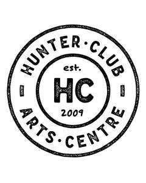

Trade Mark Journal No.2026/010 6 March 2026
UK00004341581 16 February 2026 (35,41,42,43)

- Class 35
- Retail services for works of art provided by art galleries; Retail services in relation to works of art; Organization of art exhibitions for commercial or advertising purposes; Wholesale services in relation to works of art; Retail services in relation to art materials; Arranging and conducting of art exhibitions for commercial or advertising purposes; Retail services in relation to downloadable virtual works of art; Promotion of musical concerts; Production of cinema commercials; Production of video recordings for marketing purposes; Video recordings for marketing purposes (Production of -); Production of video recordings for advertising purposes; Production of video recordings for publicity purposes; Video recordings for publicity purposes (Production of -); Production of sound recordings for publicity purposes; Hire of office equipment; Hire of advertising equipment.
- Class 41
- Art exhibitions; Art gallery services; Gallery services (Art -); Art exhibition services; Mural art painting services; School services for the teaching of art; Instruction in martial arts; Martial arts instruction; Conducting of workshops and seminars in art appreciation; Music concerts; Recording of music; Music recording; Music publishing and music recording services; Music performances; Jazz music entertainment services; Production of music concerts; Music education; Presentation of music concerts; Performance of music; Pop music concerts (Organisation of -); Live music concerts; Production of music; Music production; Music concert services; Teaching of music; Music publishing; Publishing of music; Performance of music and singing; Tuition in music; Organisation of music concerts; Production of sound and music recordings; Music festival services; Instruction in music; Music instruction; Performing of music and singing; Performance of dance, music and drama; Live music performances; Music entertainment services; Publication of music; Arranging of music performances; Music composition services; Direction of music performances; Organising of festivals relating to jazz music; Composition of music for others; Music composition for others; Music recording studio services; Live music services; Rental of phonographic and music recordings; Music mixing services; Production of music shows; Artistic management of music venues; Live music shows; Arranging of music shows; Music cassettes (Rental of -); Tuition in music appreciation; Music library services; Music group services; Music performance services; Music production services; Publication of sheet music; Music publishing services; Music transcription for others; Provision of live music; Musical concerts by radio; Music competition services; Musical entertainment; Arranging and conducting of music concerts; Live musical concerts; Publication of music books; Providing digital music from the internet; Music transcription services; Entertainment in the nature of live performances by musical bands; Presentation of musical concerts; Musical concerts by television; Education and training in the field of music and entertainment; Selection and compilation of pre-recorded music for broadcasting by others; Sound recording and video entertainment services; Entertainment in the form of recorded music (Services providing -); Musical concert services; Arranging of musical entertainment; Entertainment in the nature of dance performances; Production of musical recordings; Entertainment in the nature of live dance performances; Theatre productions; Theatre entertainment; Theatre performances; Theatre production; Theater productions; Organising of theatre productions; Theater performances; Movie theatre presentations; Theater production; Theatre services; Providing cinema and theatre facilities; Entertainment in the nature of theater productions; Provision of cinema or theatre facilities; Directing of theater productions; Entertainment in the nature of dinner theater productions; Theatre production services; Artistic management of theatre shows; Live musical theater performances; Entertainment by means of theatre productions; Rental of theatre scenery; Movie theater presentations; Providing movie theatre facilities; Movie theatre facilities (Providing -); Hire of theatre scenery; Artistic management of theatres; Cinema entertainment; Direction of theatre shows; Theater production services; Rental of lighting apparatus for theatre; Lighting apparatus for theatre (Rental of -); Reservation services for concert and theatre tickets; Theatre and concert tickets reservation services; Theatre booking services; Cinema studios; Circus productions; Staging of light entertainment productions; Providing performing arts theater facilities; Production of television and cinema films; Reservation services for theatre tickets; Production of cinema films; Provision of theatre facilities; Theatrical performances; Ticket reservation services (Theatre -); Production of theatrical performances; Theatre ticket agency services; Theatre ticket booking services; Booking agencies for theatre tickets; Rental of lighting for use on theatre sets; Entertainment services by stage production and cabaret; Entertainment services in the form of cinema performances; Organisation of musical entertainment; Preparation of entertainment programmes for the cinema; Rental of scenery for use in theatres; Scenery for theatres (Rental of -); Cinema studio services; Cinema presentations; Production of pre-recorded cinema films; Organisation, production and presentation of theatrical performances; Entertainment in the nature of ballet performances; Organisation of musical concerts; Organisation of musical performances; Movie theaters; Production of theatrical shows; Organisation of live musical performances; Artistic management of entertainment venues; Rental of cinema projectors; Rental of cinema films; Cinema services; Booking agency services for theatre tickets; Entertainment in the nature of orchestra performances; Production of revue shows before live audiences; Entertainment in the nature of symphony orchestra performances; Booking of seats for shows and booking of theatre tickets; Production of live television programmes for entertainment; Presentation of live Christmas musical productions; Musical performances; Production of television entertainment programmes; Production of cabarets; Organization, production and presentation of theatrical performances; Cabaret entertainment services; Production of stage performances; Rental of lighting apparatus for theatrical sets or television studios; Rental of cinema projection equipment; Theatrical production services; Rental of costumes [theatrical or masquerade]; Presentation of theatrical performances; Theatrical floor shows provided at performance venues; Directing of theatrical shows; Consultancy on film and music production; Lighting productions for entertainment purposes; Live musical performances; Circus performances; Theatrical shows provided at performance venues; Production of live entertainment; Rental of theatrical scenery; Production of entertainment in the form of television programmes; Amusement park services with a theme of television productions; Artistic management of musical shows; Entertainment services in the form of musical group performances; Radio entertainment production; Entertainment services in the form of concert performances; Provision of musical entertainment; Production of stage plays; Production of live entertainment events; Performance of musical programmes; Musical entertainment services; Studios (Movie -); Ticket reservation and booking services for theater shows; Providing theater listings; Rental of lighting apparatus for movie sets or film studios; Production of television films; Operating of film studios; Film production for entertainment purposes; Live dance exhibitions; Live performances by a musical band; Live performances by a musical bands; Live demonstrations for entertainment; Presentation of live dance performances; Presentation of live entertainment performances; Provision of live musical performances; Presentation of live performances by musical bands; Entertainment in the nature of live performances by rock groups; Live band performance services; Live entertainment services; Production of live performances; Conducting of live entertainment events; Live comedy shows; Production of live entertainment features; Entertainment services for producing live shows; Presentation of live comedy performances; Presentation of live entertainment events; Organisation of live performances; Performances (Presentation of live -); Live performances (Presentation of -); Presentation of live performances; Live performances by rock groups; Production of live shows; Services providing entertainment in the form of live musical performances; Entertainment in the form of live musical performances (Services providing -); Provision of live entertainment; Live entertainment production services; Presentation of live performances by a musical group; Live stage shows; Presentation of live performances by rock groups; Presentation of live show performances; Presentation of live comedy shows; Live show production services; Conducting of live sports events; Provision of facilities for live band performances; Live performance services; Arranging and conducting of live entertainment events; Theatrical performances both animated and live action; Studio services (Recording -); Recording studio services; Recording studios; Rehearsal [recording] studio services; Production of musical works in a recording studio; Film studio services; Recording studio services for television; Recording studio services for films; Rental of recording studios; Movie studio services; Hire of recording studios; Television studio services; Studio services for the recording of cine-films; Studio services for the recording of videos; Recording studio services for videos; Sound recording studio services; Rental of television studio scenery; Audio recording studio services; Recording, film, video and television studio services; Film studios; Recording studio facilities (Provision of -); Studio recording facilities (Provision of -); Studio facilities (Provision of recording -); Provision of recording studio facilities; Cinematographic film studio services; Provision of video recording studio facilities; Sound recording studios; Providing dance studio facilities; Rental of film studios; Movie studios; Dance studios; Provision of film studio facilities; Production of films in studios; Provision of recording studio services; Provision of video recording studio services; Recording studio services for the production of sound bearing discs; Motion picture studio services; Rental of lighting apparatus for television studios; Rental of scenery for television studios; Booking of seats for entertainment events; Rental of concert halls; Booking of entertainment halls; Wedding celebrations (Organisation of entertainment for -); Hosting of entertainment events; Providing will-call ticket services for entertainment, sporting and cultural events; Sporting event organization; Booking of seats for concerts; Providing dance hall facilities; Concert booking; Rental of stadium facilities; Stadium facilities (Rental of -); Ticketing and event booking services; Organisation of concerts; Organisation of entertainment events; Arranging for ticket reservations for shows and other entertainment events; Booking of seats for shows and sports events; Organising of meetings in the field of entertainment; Ticket reservation and booking services for music concerts; Provision of sporting club facilities; Booking agencies for concert tickets; Reservation services for concert tickets; Club sporting facilities (Provision of -); Ticket reservation and booking services for sporting events; Booking of performing artists for events (services of a promoter); Ticket reservation and booking services for entertainment events; Organising events for entertainment purposes; Ticket reservation services (Concert -); Presentation of concerts; Organization of cosplay entertainment events; Organization of entertainment events; Organisation of musical events; Festivals (Organisation of -) for entertainment purposes; Organisation of entertainment for birthday parties; Concert booking services; Organisation of events for cultural, entertainment and sporting purposes; Organising community sporting events; Organisation of entertainment and cultural events; Rental of entertainment halls; Night club services [entertainment]; Rental of equipment for use at sporting events; Country clubs providing sporting facilities; Organising of entertainment; Nightclub services [entertainment]; Club [cabaret] services; Organising of sporting events; Organising sporting events; Ticket reservation for cultural events; Planning (Party -) [entertainment]; Party planning [entertainment]; Entertainment party planning; Organisation of sporting events; Ticket reservation and booking services for esports events; Booking of sports personalities for events (services of a promoter); Ticket information services for entertainment events; Ticket information services for sporting events; Special event planning; Providing facilities for sports events; Organising of exhibitions for entertainment purposes; Providing theme park facilities; Organising of entertainment competitions; Organising of competitions for entertainment; Competitions (Organising of entertainment -); Time recording services for sporting events; Management of events for sporting clubs; Organising of stage shows; Ticket reservation and booking services for cultural events; Booking of sports facilities; Organisation of entertainment competitions; Ticket reservation and booking services for education, entertainment and sports activities and events; Concert services; Provision of rooms for entertainment; Ticket procurement services for entertainment events; Organisation of sporting events and competitions; Rental of sports grounds; Booking agency service for cinema tickets; Snooker hall services; Ballet classes; Exercise classes; Conducting of classes; Arranging of classes; Singing classes; Linguistic classes; Gym activity classes; Provision of dance classes; Conducting fitness classes; Conducting classes in nutrition; Conducting classes in exercise; Exercise and fitness classes; Arranging and conducting of classes; Producing and conducting exercises for music classes and programmes; Conducting courses, seminars and workshops; Training courses; Conducting classes in weight reduction; Conducting physical fitness conditioning classes; Conducting classes in weight control; Arrangement of training courses in teaching institutes; Arranging for students to participate in educational courses; Providing courses of instruction at college level; School services for the teaching of languages; Arranging and conducting of day school courses for adults; Arranging of training courses; Residential training courses; Education services in the nature of courses at the university level; Arranging of courses of instruction; Arranging professional workshop and training courses; Providing courses of instruction at high school level; Language courses; Tutoring at cram schools; Provision of courses of instruction in languages; Postgraduate training courses; Instruction courses related to slimming; Courses (Training -) relating to religious subjects; Provision of training courses; Training courses (Provision of -); Teaching by correspondence courses; Education academy services for teaching languages; Teaching at elementary schools; Residential education courses; Providing courses of instruction at post-graduate level; Training in yoga; Aerobics training services; Workshops for training purposes; Courses (Training -) relating to science; Provision of training courses for young people in preparation for vocations; Provision of training courses for young people in preparation for careers; Preparation of educational courses and examinations; Written training courses; Arranging of workshops and seminars; Teacher training services; Teaching academy services; Correspondence courses; Pilates instruction; Vocational training courses (Provision of -); Yoga instruction; Music tuition by correspondence courses; Provision of courses of instruction; Courses of instruction (Provision of -); Residential education courses relating to archery; Courses (Training -) relating to philosophical subjects; Arranging of courses of instruction for tourists; Ballet lessons; Training of teachers; Conducting of instructional, educational and training courses for young people and adults; Production of course material distributed at vocational courses; Conducting of courses; Self-awareness courses [instruction]; Conducting instructional courses; Instruction courses relating to physical fitness; Providing courses of training; Provision of language schools and language courses; Dance schools; Courses (Training -) relating to law; Arranging technical instruction courses; Education, teaching and training; School courses relating to study assistance; Training of swimming teachers; Courses (Training -) relating to medicine; Provision of education courses; Providing courses of instruction; Instruction courses relating to sporting activities; Conducting of educational courses; Provision of instruction courses in finance; Seminars; Conducting workshops and seminars in art appreciation; Provision of training courses for young people in preparation for employment; Development of educational courses and examinations; Organisation of training courses; Education academy services for teaching acting; School courses relating to examination preparation; Services for teaching languages; Training of sports teachers; Distance learning courses; Providing online courses of instruction; Conducting workshops [training]; Courses (Training -) relating to engineering; Obedience school training for animals; Conducting distance learning instruction at the college level; Courses (Training -) relating to insurance; Teaching at junior high schools; Education academy services for teaching art history; Production of course material distributed at vocational seminars; Production of course material distributed at vocational lectures; Training courses in engine design; Sports tuition, coaching and instruction; Courses (Training -) relating to banking; Tuition in gymnastics; Provision of computer related training courses; Postgraduate training courses relating to management studies; Conducting of educational courses in science; Conducting training courses relating to nutrition online; Education in the field of art rendered through correspondence courses; Arranging and conducting of training courses; Providing courses of training for young people; Instruction courses relating to health; Ballet schools; Educational services for providing courses of instruction; Courses (Training -) relating to accountancy; Courses (Training -) relating to finance; Providing of training, teaching and tuition; Conducting of educational courses in business; Providing courses of instruction for young people; Educational courses (Provision of -); Arranging for students to participate in educational activities; Courses (Training -) relating to management; Organising of education seminars; Provision of facilities for education; Provision of entertainment; Provision of recreation facilities; Provision of facilities for recreation; Recreation facilities (Provision of -); Provision of recreational facilities; Recreational facilities (Provision of -); Training facilities (Provision of -); Provision of training facilities; Provision of gymnasium facilities; Gymnasium facilities (Provision of -); Provision of leisure facilities; Provision of facilities for tuition; Services for the provision of recreational facilities; Sports facilities (Provision of -); Provision of sports facilities; Provision of facilities for sports; Provision of entertainment facilities; Provision of exercise facilities; Provision of sporting facilities; Keep-fit facilities (Provision of -); Provision of museum facilities; Provision of cinema facilities; Provision of ski-ing facilities; Provision of sport facilities; Provision of recording facilities; Services for the provision of sporting facilities; Provision of facilities for dancing; Provision of dancing facilities; Dancing facilities (Provision of -); Arranging the provision of recreation facilities; Club recreation facilities (Provision of -); Physical education facilities (Provision of -); Provision of educational examination facilities; Provision of facilities for group exercise; Museum facilities (Provision of -) for presentations; Facilities for the production of films (Provision of -); Provision of play facilities for children; Provision of facilities for employment skills training; Services for the provision of exercise equipment; Swimming bath facilities (Provision of -); Museum facilities (Provision of -) for exhibitions; Provision of keep fit facilities; Services for providing recreational facilities; Recreation facilities (Providing -); Providing facilities for recreation; Providing recreation facilities; Services for the provision of training in the use of computers; Provision of recreational areas; Provision of training; Education services relating to the provision of restaurant services; Providing recreational facilities.
- Class 42
- Art work design.
- Class 43
- Room hire services; Temporary room hire; Linen hire; Hire of pavilions; Hire of marquees; Hire of temporary office space; Private members dining club services; Private members drinking club services; Public house services; Hire of interior chairs; Rental of lighting apparatus for decorating private residences; Event facilities and temporary office and meeting facilities; Provision of event facilities and temporary office and meeting facilities; Provision of conference, exhibition and meeting facilities; Provision of temporary accommodation, namely desk space, meeting rooms, and business facilities; Organisation of catering for birthday parties; Providing food and drink catering services for fair and exhibition facilities; Provision of trade show facilities [accommodation]; Marquee hire; Provision of conference facilities; Provision of facilities for exhibitions; Provision of facilities for conventions; Provision of exhibition facilities; Provision of facilities for board meetings.
Nicholas Thomas William Pooley